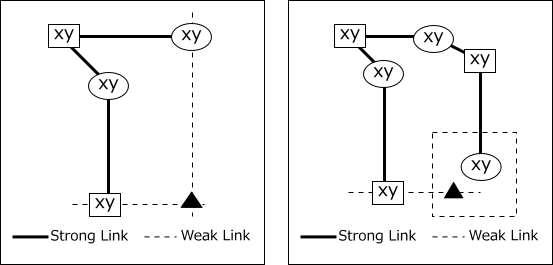
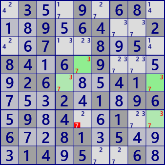
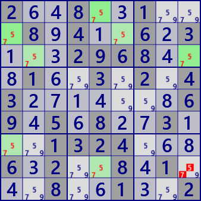

Remote Pair
RemotePair is an analysis algorithm that connects bivalue cells with a strong link.
As shown in the following figure, bivalue cells (candidate numbers are xy) are linked by a strong link.
In the figure, the cells are displayed in two groups.
There are two cells(□ and ○) with an even number of distances,
and the cell(▲) connected with these by weak links can not be either x or y.

An example of Remote Pair
 .3..9.68...9.64..2..7..8.5.84.6.9....26...41....2.1.96.9.4..1..6..81.5...14.5..6.
2..8..1...8.4..6.3...2968...1..3.2.43.......69.5.8..3...1324...6.2..8.1...8..1..2
RemotePair program
Basic structure of spreading search
It shows the basic structure of spreading search used in some analysis algorithms. The basic technique is queue.
- Take out the focused node from Queue.
- Processing is performed for the focused node, and the node to be processed next time is stored in the queue.
It can also be constructed by a recursive method. However, recursion has overhead of calling and returning, and the method of developing recursion is advantageous.
//Basic structure of search routine
main{
set OriginNode
if( SearchSpreading(OriginNode) ) Solved
}
bool SearchSpreading(OriginNode){
define Queue
push.Queue(OriginNode)
while( focusedNode=pop.Queue() ){
//repeat the following as long as there is a focused node.
foreach(link to the focusedNode){
if(the other end node of the link is unprocessed){
(some processing)
push.Queue(the other end node)
｝
}
}
return (search results);
}RemotePair / Generation function
public partial class CellLinkGen: AnalyzerBaseV2{
public bool RemotePair( ){ //RemotePairs
if(BVCellLst==null) BVCellLst = pBDL.FindAll(p=>(p.FreeBC==2)); //BV:bivalue
foreach( Bit81[] CRL in _RPColoring( ) ){
int FreeB=CRL[0].ID;
bool RPfond=false;
foreach( var P in pBDL.Where(p=>(p.FreeB&FreeB)>0) ){
if( (CRL[0]&ConnectedCells[P.rc]).IsZero() ) continue;
if( (CRL[1]&ConnectedCells[P.rc]).IsZero() ) continue;
P.CancelB=P.FreeB&FreeB; RPfond=true;
}
if(RPfond){
.
. (Solution report code)
.
return true;
}
}
return false;
}
}
public partial class CellLinkGen: AnalyzerBaseV2{
private IEnumerable<Bit81[]> _RPColoring( ){
if( BVCellLst.Count<4 ) yield break;
Bit81 TBD = new Bit81();
BVCellLst.ForEach(p=>TBD.BPSet(p.rc));
int rc1;
while( (rc1=TBD.FindFirstrc())>=0 ){
Bit81[] CRL=new Bit81[2];
CRL[0]=new Bit81(); CRL[1]=new Bit81();
Queue<int> rcQue = new Queue<int>();
rcQue.Enqueue(rc1<<1);
CRL[0].BPSet(rc1);
int FreeB = pBDL[rc1].FreeB;
CRL[0].ID=FreeB;
while( rcQue.Count>0 ){
int rcX=rcQue.Dequeue();
int kx = 1-(rcX&1);
rc1 = rcX>>1;
TBD.BPReset(rc1);
Bit81 Chain = TBD&ConnectedCells[rc1];
foreach( var rc2 in Chain.IEGet_rc() ){
if( pBDL[rc2].FreeB==FreeB ){
if( !TBD.IsHit(rc2) ) continue;
rcQue.Enqueue( (rc2<<1)|kx );
CRL[kx].BPSet(rc2);
TBD.BPReset(rc2);
}
}
}
yield return CRL;
}
yield break;
}
}